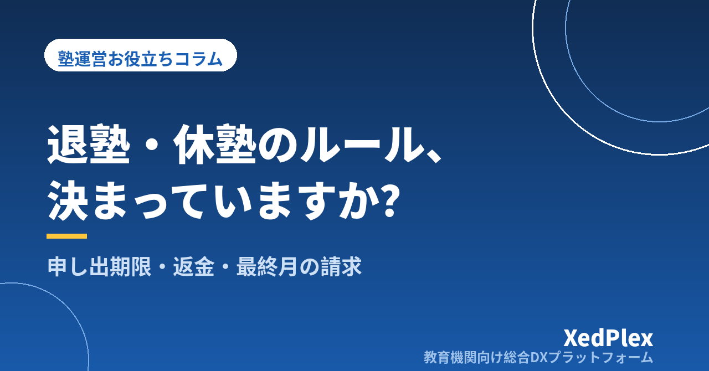

塾の退塾・休塾のルールと手続きの整え方｜申し出期限・返金・最終月の請求でもめない規定の作り方

「月末に『今月で辞めます』とLINEが来て、翌月分の請求をどうするか迷った」「部活が忙しいので数か月休みたいと言われ、その間の月謝を取るのか、席を空けておくのか、その場で決められなかった」「口座振替を止め忘れて翌月に引き落としてしまった」──個人塾・小規模塾の塾長なら、退塾や休塾のたびにこうした判断を迫られた経験があるはずです。
退塾は、塾にとっても保護者にとっても気持ちの重い場面です。だからこそ、お金と手続きのルールはあらかじめ決めておき、感情ではなく規定に沿って淡々と進められるようにしておくことが大切です。この記事では、退塾・休塾でもめる原因を整理したうえで、最初に決めておく規定の項目、手続きの流れ、記録の残し方までを、小さな塾でも無理なく運用できる形でまとめます。
退塾・休塾でもめる3つの原因
退塾時のトラブルは、保護者側の相談事例を見ても「最終月の月謝が日割りにならない」「申し出が遅れて翌月分も請求された」「前払いした講習費が返ってこない」といったお金の話に集中しています。塾側から見ると、原因は大きく3つです。
| 原因 | 起きていること | 結果 |
|---|---|---|
| ①ルールが決まっていない、または書面にない | 入塾時の説明が口頭だけで、申し出期限や最終月の扱いが規約に書かれていない | 「そんな話は聞いていない」となり、毎回その場の判断で対応がぶれる |
| ②入塾時に伝えていない | 規約には書いてあるが、入塾のときに説明しておらず、保護者は退塾のときに初めて知る | 規定どおりの請求でも「後出し」に感じられ、不信感が残る |
| ③手続きの流れが人任せ | 申し出を受けた講師が塾長に伝え忘れる、口座振替の停止や名簿の更新が漏れる | 退塾後に引き落としや連絡が続き、返金対応と謝罪が発生する |
裏を返せば、規定を決めて書面にし、入塾時に説明し、手続きを流れとして固定するという3つで、退塾時のトラブルの大半は防げます。開業時に決めておきたい事務のひとつでもあるので、これから塾を始める方は個人塾の開業で見落としがちな「事務まわり」の準備リストもあわせて参考にしてください。
最初に決めておく退塾規定の項目
退塾規定で決めておきたいのは、次の項目です。いずれも「決まっていないと、その場で判断することになる」ものばかりです。
| 項目 | 決めること | 決め方の目安 |
|---|---|---|
| 申し出期限 | 退塾したい月の何日までに申し出れば、翌月分の請求が発生しないか | 「前月○日まで」など、請求データを作る日より前に設定する。期限を過ぎた場合の扱い（翌月末退塾扱いなど）もセットで決める |
| 申し出の方法 | 口頭・LINE・退塾届のどれを正式な申し出とするか | 口頭やメッセージで受けても、最終的に「退塾届」を提出してもらう形にすると、日付と内容の記録が残る |
| 最終月の請求 | 月途中の退塾を日割りにするか、月単位にするか | どちらでもよいが、規約に明記し、入塾時に説明する。日割りにするなら計算方法（授業回数か日数か）まで書く |
| 前払い分の返金 | 講習費・年間教材費・前納した月謝をどう扱うか | 返金する範囲、返金方法、返金までの日数を決める。「返金しない」場合はその旨を契約時に説明する |
| 個人情報の扱い | 退塾後に生徒・保護者の情報をいつまで保管するか | 面談記録や成績記録の保管期間と、連絡先の削除時期を決める（生徒の個人情報管理の基本参照） |
申し出期限は「請求を作る日」から逆算する
もめやすいのは申し出期限です。月末ぎりぎりに「今月で辞めます」と言われたとき、翌月分の口座振替データがすでにできあがっていると、止めるか返金するかの作業が発生します。期限は「翌月分の請求を確定する日」より前に置くのが原則です。たとえば毎月20日に請求を確定しているなら、申し出期限は15日といった具合です。集金方法ごとの締めの考え方は個人塾の月謝管理・集金方法まとめで整理しています。
「厳しすぎる規定」は塾の評判にも返ってくる
退塾を減らしたいからといって、申し出期限を極端に早くしたり、返金を一切しないと定めたりするのは逆効果です。「辞めるときに損をする塾」という印象は、入塾前の検討や辞めた後の口コミにも影響します。塾の事務が回る範囲で、保護者から見て納得できる規定にしておくのが、結果として塾を守ることになります。
学習塾は、特定商取引法の「特定継続的役務提供」の対象役務のひとつとされており、契約期間や金額が一定の条件に当てはまる契約では、クーリング・オフや中途解約時に塾が請求できる額の上限などのルールが定められています。月謝制で毎月契約が更新される形か、講習や年間コースをまとめて契約する形かによって扱いが変わることもあるため、自塾の契約形態が対象になるか、規約の内容が法令に沿っているかは、消費生活センターや弁護士など専門家・所轄機関に確認してください。この記事では一般的な考え方に留めています。
休塾のルールは「期間・費用・席」の3つを決める
退塾と並んで判断に迷うのが休塾です。あいまいなまま長引くと、席だけ確保して収入はない状態が続き、そのまま自然消滅して退塾になりがちです。決めておくのは次の3つです。
| 決めること | 内容 | 決め方の目安 |
|---|---|---|
| ①期間 | 休塾できる期間の上限と、延長の扱い | 「最長○か月まで。それを超える場合は一度退塾扱いとし、復帰時は再入塾（入塾金は不要）」など、期限を切って自然消滅を防ぐ |
| ②費用 | 休塾中に月謝や施設費を請求するか | 月謝は請求せず、席を確保する場合は少額の在籍費をいただく、あるいは席は確保しない代わりに費用なし、のいずれかを規約に明記する |
| ③席（コマ） | 休塾中のコマを空けておくか、他の生徒に回すか | 個別指導で特定の曜日・時間を確保する場合は費用とセットで考える。復帰時に同じコマを保証しない場合はその旨を伝えておく |
休塾に入る前に「○月○日ごろに一度ご連絡します」と復帰確認の予定を決めておくと、そのまま連絡が途絶えることを防げます。短期の欠席と休塾の線引きは塾の欠席・振替管理のルール作りと運用で整理した振替ルールと矛盾しないように決めてください。
申し出から完了までの手続きを5ステップに固定する
規定が決まったら、申し出から完了までの流れを固定します。誰が受けても同じ順番で進めば、口座振替の停止漏れや名簿の更新漏れがなくなります。
| ステップ | やること | ポイント |
|---|---|---|
| ①申し出を受ける | 講師やメッセージで受けた場合も、その日のうちに塾長に共有し、受付日を記録する | 受付日が申し出期限の判定基準になる。その場で引き止めや説得はしない |
| ②面談または電話で話を聞く | 退塾理由と、最終授業日・最終月の請求・返金の有無を説明する | 理由は責めずに聞く。改善できることがあれば提案してよいが、決めるのは保護者 |
| ③退塾届を受け取る | 最終授業日・返却物・返金先口座などを記入してもらう | 紙でも、フォームでもよい。日付と内容が残ることが目的 |
| ④事務処理 | 請求の停止（口座振替データからの除外）、返金処理、名簿の更新、講師への共有、貸出物の回収 | チェックリストにして、1件ごとに完了を確認する |
| ⑤最終日とお礼 | 最終授業でのひと言と、翌日までにお礼の連絡を送る | 「またいつでも」の一文が、紹介や復帰につながる |
退塾時の説明で使える文例
【申し出を受けたときの返信】
ご連絡ありがとうございます。○○さんの退塾についてのお申し出、○月○日付で承りました。規定により最終授業日は○月○日、最終のご請求は○月分までとなります。お手続きについて一度お電話でご説明したいのですが、ご都合のよい時間帯を教えていただけますでしょうか。
【最終日の翌日に送るお礼】
昨日で○○さんの授業が最終回となりました。○年○か月の間、当塾を選んでいただき本当にありがとうございました。○○さんが△△を苦手から得意に変えていった姿は、私たちにとっても励みでした。今後、勉強のことで困ったときは、いつでもご相談ください。ご家族のますますのご健勝をお祈りしています。
お金のことは口頭で説明したうえで、必ず文字でも残しておきます。あとから「聞いていない」となることを防ぐ意味でも、文字の記録は双方を守ります。
記録を残し、退塾理由を次の運営に活かす
生徒ごとの記録に「退塾日・理由・最終請求の内容・返金の有無・保管期限」を残しておくと、後日の問い合わせにも答えられますし、復帰したときに以前の記録から指導を再開できます。
さらに大きいのは、退塾理由を集めて見返すことです。1件ずつは一言で終わりますが、半年分を並べると「中2の夏に成績が伸びず辞めるケースが多い」「送迎の負担で辞める家庭がある」といった傾向が見えてきます。理由の記録は、次のような大まかな分類で十分です。
- 家庭・本人の事情（転居・経済的な理由・進路変更・部活など）
- 成績・指導への不満（伸びない・講師との相性・教え方）
- 通いやすさ（時間帯・送迎・自習室の使いやすさ）
- 連絡・対応への不満（連絡が遅い・報告がない）
- 他塾への移籍（理由も分かれば記録する）
塾側で改善できる理由が繰り返し出ているなら、それが次に手をつけるべき運営課題です。退塾に至る前に保護者の不安を察知する接点づくりは退塾を防ぐ保護者コミュニケーションの仕組み、退塾時に未納が残っている場合の対応は塾の月謝未納、どう催促する？を参考にしてください。
- 申し出期限が「翌月分の請求を確定する日」より前に設定され、規約に書かれている
- 正式な申し出の方法（退塾届など）が決まっている
- 最終月の請求（日割りか月単位か）と前払い分の返金ルールが明記されている
- 休塾の期間上限・費用・席の扱いが決まっている
- 入塾時の説明で退塾・休塾の規定に触れ、書面を渡している
- 申し出から完了までの5ステップと事務チェックリストがある
- 退塾日・理由・最終請求・返金の記録が生徒ごとに残っている
- 規約の内容が法令に沿っているか、専門家・所轄機関に確認している
まとめ
退塾・休塾でもめる原因は、ルールが決まっていない、入塾時に伝えていない、手続きが人任せ、の3つに集約されます。申し出期限・最終月の請求・返金・休塾の条件を規定として決め、入塾時に説明し、申し出から完了までを5ステップで固定することで、退塾の場面を仕組みで処理できるようになります。最後の対応が丁寧な塾は、辞めた家庭からの紹介や復帰にもつながります。まずは、いまの規約に「申し出期限」と「最終月の請求の扱い」が書かれているかを確認するところから始めてみてください。
この記事を書いた運営より
私たちは、個人経営・小規模の学習塾向けに、生徒管理・QRコードでの入退室記録・月次請求・保護者へのLINE/メール通知・AIによる学習支援までをひとつにまとめた教育機関向け総合DXプラットフォーム「XedPlex（ゼドプレックス）」を開発・提供しています。初期費用は0円、料金は生徒1名あたり月額300円（税込）から。生徒50名の塾なら月15,000円（税込）です。全国8つの教室で導入されており、導入塾には紹介ホームページの無料作成も行っています。機能の詳細説明はこちら。
XedPlexの詳細を見る